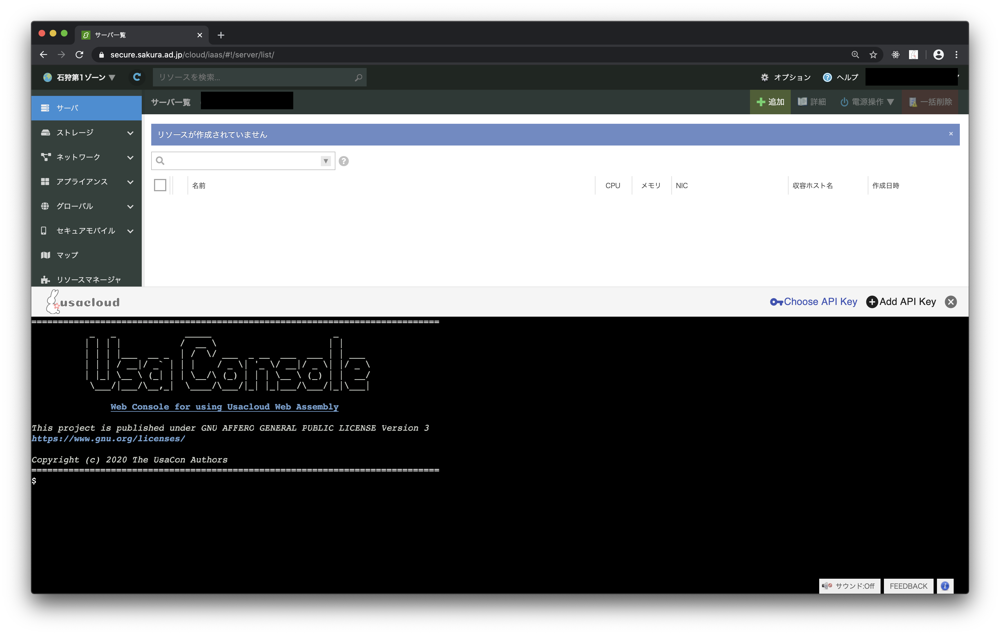
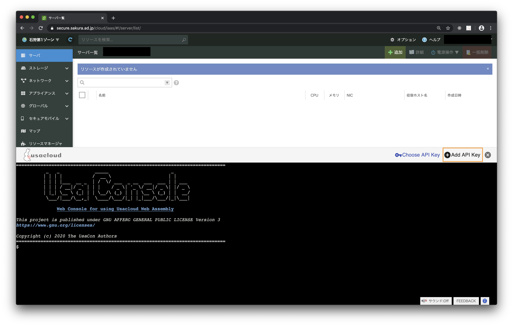
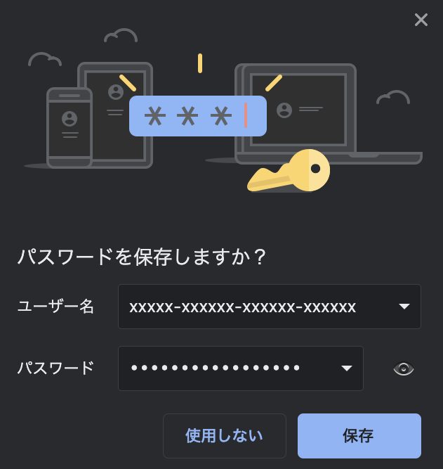
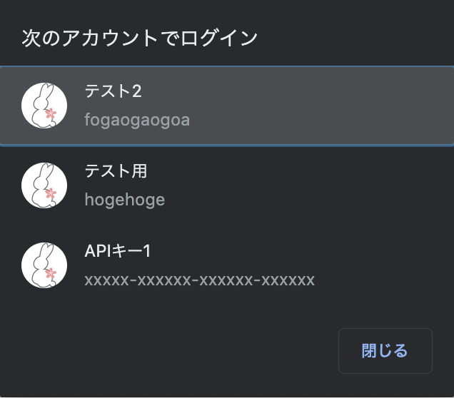
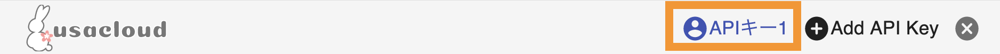

usacon日本語ドキュメント
A browser extension for using SakuraCloud CLI in the control panel.
Usaconはさくらのクラウドのコントロールパネル上でCLIであるUsacloudを
利用できるようにするChrome拡張です。
WebAssemblyを利用しており別途サーバを必要とせずにブラウザだけでUsacloudコマンドが実行可能になります。
https://github.com/sacloud/usacon

Install
From Chrome Web Store / Chromeウェブストアから
https://chrome.google.com/webstore/detail/usacon/ihcpjahhejhblhadomiffpnfmfaklpeh
From source code / ソースコードから (for a developer)
1: ブラウザ拡張のビルド
$ git clone https://github.com/sacloud/usacon.git
$ cd usacon
$ make tools release-build
# ./dist配下にファイル一式が出力される
2: Chromeへインストール
- Chromeで
chrome://extensionsを開く パッケージ化されていない拡張機能を読み込むをクリック- 1で出力された
distディレクトリを指定
Usage
UsaConはさくらのクラウドのコントロールパネルのうち、IaaS部分でのみ利用可能です。
具体的にはhttps://secure.sakura.ad.jp/cloud/iaasを開いている場合が対象となります。
コンソールの表示
ブラウザ右上に表示されているのUsaConのブラウザ拡張アイコンをクリックするとコンソールの表示/非表示が切り替わります。
APIキーの登録
Add API KeyボタンをクリックするとAPI入力画面が表示されます。

入力してSave To The BrowserボタンをクリックするとブラウザにAPIキーを保存するダイアログが表示されます。

Note: もしダイアログが表示されない場合はURLバーの右側の鍵アイコンをクリックすると表示されることがあります
APIキーの選択
Choose API Keyボタンをクリックするとブラウザに保存済みのAPIキーの選択ダイアログが表示されます。

Tip
既にsecure.sakura.ad.jpでログインパスワードなどを保存済みの場合、上記で登録したAPIキー以外の候補も表示されます。
このためUsaconで登録したAPIキーには目印としてUsacloudアイコンを見出しに設定しています。
Warning
既にUsaconでAPIキーを登録している場合、登録されている全てのAPIキーが候補として表示されます。
現在コントロールパネルにログインしているアカウントとは別のアカウントと紐づけられたAPIキーの場合でも一覧表示される点にご注意ください。
APIキーの選択解除
APIキーを選択した状態だと保存時に指定したAPIキーの名前がツールバーに表示されています。
APIキーの名前をクリックすることで選択解除が行えます。

コンソールの操作
コマンド
以下のコマンドが利用可能です。
usacloudechoenvclearorcls
キーボードショートカット
bash風のキーボードショートカットが利用可能です。
↑または↓: ヒストリーの表示tab: (未実装) オートコンプリートctrl + c: 実行中のコマンドの終了ctrl + z: 実行中のコマンドの中断(現在はctrl + cと同等の処理)-
ctrl + l: 画面のクリア -
ctrl + a: カーソルを行頭へ移動 ctrl + e: カーソルを行末へ移動ctrl + b: カーソルを1文字前へ移動ctrl + f: カーソルを1文字後ろへ移動
Usacloudとの違い
使用できないコマンド
以下のコマンドは利用できません。
usacloud config(profile)usacloud server sshusacloud server rdpusacloud server vncusacloud self
使用できないコマンドラインオプション
以下のオプションは利用できません。
--profile--zones--trace--fake-store